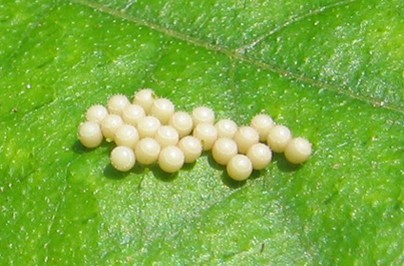

Butterflies have four life stages. Firstly the egg, then the larva [caterpillar], then the pupa [chrysalis] and eventually the adult butterfly.

1. The egg
The egg stages last from three to seven days. However this vary among totally different species of butterflies. Some species overwinter as eggs and bear diapause to survive several months of winter.
2. The caterpillar
A tiny, caterpillar hatches from the egg. The eggshell is its first meal.
It is designed to be body eating machine. It increases its body mass thousands of times before it pupates.
Caterpillar molts several times outgrow their exoskeleton.
This stage is the most dangerous among the other stages of the life cycle of a butterfly as
the mortality rates of caterpillars are very high.
They are subject to climate, disease, parasites, and predators.
3. The butterfly chrysalis
The caterpillar spun a string of silk. around its body and attached the strings to the branch to carry the chrysalis in situ Most of the butterfly species will stay in the chrysalis for one to two weeks before the butterfly emerges. Several species pass the winter as a pupa and enter diapause throughout the fall and stay as a pupa until spring when the butterfly comes out.
4. The lifecycle of a butterfly begins and ends with the adult butterfly.
When a butterfly comes out of its chrysalis, its wings are crumpled". The butterfly will hang with its wings down and will force and fill the wings full of fluids from its body to straighten them out. The butterfly waits several hours for the wings to harden, and dry before it can fly away. The lifespan of most adult butterflies is about 2-3 weeks but this varies among species.
Species that overwinter as adults such as monarchs live for many months. The female adult butterflies find a mate and also the right plants on which they will lay their eggs to begin the butterfly life cycle all over again.
MIGRATION
Lepidopterans migrate on all contents except. Antarctica. Including from or Subtropical within tropical areas.
By migrating, these species can avoid unfavorable circumstances including weather, food shortage, or overpopulation,
In some lepidopteran, species all individual migrates in others only some migrate.
compared to other butterflies, monarch butterflies cannot survive a long cold winter. alternatively, they spend the winter in roosting spots.
Monarchs from the west of the Rocky Mountains fly to small groves of trees down the California coast.
Those from the east of the Rocky Mountains fly south to the forest high down the mountains of Mexico.
The monarch's migration is dependent on seasonal changes.
The Danaids in South India are prominent migrants between The Eastern Ghats to and Western Ghats
The following is a video of monarch butterflies during migration.
DIET OF BUTTERFLIES
In order to know what butterflies eat, we have to know how they eat
Butterflies have a long tongue called a proboscis which they can curl and uncurl to drink through like a straw. This is the main reason why they are mainly restricted to a liquid diet.
They drink sweet nectar from flowers.
Some butterflies also eat a different sugary treat fruit. they especially enjoy fully ripened and/or rotting fruit such as bananas, apples, and pears
Butterflies do not always eat for their own nourishment.
Many kinds of butterflies especially males will feed on moist substances such as puddles, wet 'gravels, sweat, and ever tears
These butterflies gather salts and minerals to pass on to female butterflies which help with egg development.
HABITAT
Butterflies live and breed in diverse habitats including, salt marches, mangroves, sand dunes, lowland forest, wetlands, grasslands and mountain Zones.
Some species live in deserts and feed upon the succulent Plants that grow in harsh conditions.
There are several species that have specific requirements for its habitat ad can’t live anywhere else. For e.g. the Karner blue butterfly.
However there are also some species that are adaptable and can be found in many different habitats and on many different continents. For e.g. the cabbage white butterfly.